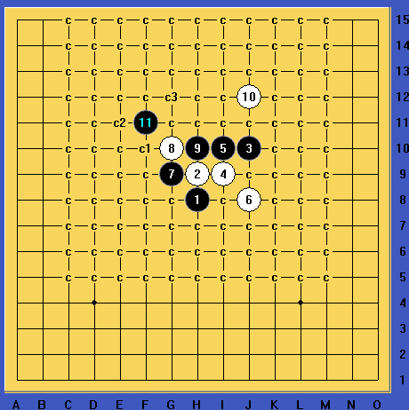

疏星之地毯习题（2）
#1 疏星之地毯习题（2）作者：换你一笑 发表时间：2013-9-11 7:38:56
要求黑必胜地毯
有兴趣的朋友拆下，不排除有第二套杀的可能。
补充下：虽然不是主流的黑9，但是9手之后，白10唯一可下就是I11，其余的10手都必败，上面出的习题是败10里面最强的一个。
［ 日月丽天同学于 2013-9-11 8:12:08 时花20金币送鲜花一朵］
［ 日月丽天同学于 2013-9-11 8:12:08 时花20金币送鲜花一朵］
［ 空恨社小仙同学于 2013-9-11 22:21:25 时花20金币送鲜花一朵］
［ 空恨社小仙同学于 2013-9-11 22:21:25 时花20金币送鲜花一朵］
［ 空恨社小仙同学于 2013-9-11 22:21:25 时花20金币送鲜花一朵］
［ 空恨社小仙同学于 2013-9-11 22:21:25 时花20金币送鲜花一朵］
［ 空恨社小仙同学于 2013-9-11 22:21:25 时花20金币送鲜花一朵］
#2 Re:疏星之地毯习题（2）作者：絕版賭徒 发表时间：2013-9-11 12:21:29
盖8左上，....［ 换你一笑同学于 2013-9-11 13:07:49 时花20金币送鲜花一朵］
［ 换你一笑同学于 2013-9-11 13:07:49 时花20金币送鲜花一朵］
［ 换你一笑同学于 2013-9-11 13:07:49 时花20金币送鲜花一朵］
［ 换你一笑同学于 2013-9-11 13:07:49 时花20金币送鲜花一朵］
［ 换你一笑同学于 2013-9-11 13:07:49 时花20金币送鲜花一朵］
［ 换你一笑同学于 2013-9-11 13:07:49 时花20金币送鲜花一朵］
#3 Re:絕版賭徒【==Re:疏星之地毯习题（2）==】作者：换你一笑 发表时间：2013-9-11 13:06:56
恩，思路是对的。忘说了，要求上传详细的地毯谱
#4 Re:疏星之地毯习题（2）作者：山城刀客 发表时间：2013-9-11 22:59:38
 败10.rar
败10.rar
c1路思路稍微有点难度，不知是否有BUG，检查下吧！
［ 换你一笑同学于 2013-9-11 23:33:40 时花20金币送鲜花一朵］
［ 换你一笑同学于 2013-9-11 23:33:40 时花20金币送鲜花一朵］
［ 换你一笑同学于 2013-9-11 23:33:40 时花20金币送鲜花一朵］
［ 换你一笑同学于 2013-9-11 23:33:40 时花20金币送鲜花一朵］
［ 换你一笑同学于 2013-9-11 23:33:40 时花20金币送鲜花一朵］
［ 换你一笑同学于 2013-9-11 23:33:40 时花20金币送鲜花一朵］
#5 Re:山城刀客【==Re:疏星之地毯习题（2）==】作者：换你一笑 发表时间：2013-9-11 23:36:50
额，我是用这个13地毯的，后面确实有个15有点难度，不过这样思路比较正常容易想到，刀客前辈的13手我没拆过，如果能杀也确实是又一套精彩的杀了。
呼叫小仙姐姐来检查 ，我想打下酱油。。。
，我想打下酱油。。。
#6 Re:疏星之地毯习题（2）作者：平凡人生 发表时间：2014-1-4 13:39:30
#7 Re:疏星之地毯习题（2）作者：棋元道 发表时间：2014-3-19 22:28:06
其他10都败？？？？